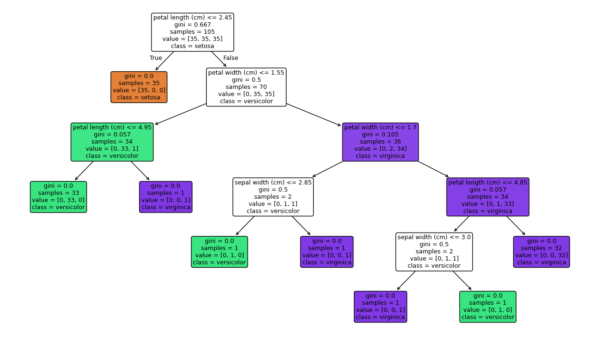

from sklearn.datasets import load_iris
from sklearn.model_selection import train_test_split
from sklearn.tree import DecisionTreeClassifier
from sklearn.metrics import accuracy_score, classification_report
iris = load_iris()
X, y = iris.data, iris.target
X_train, X_test, y_train, y_test = train_test_split(
X,
y,
test_size=0.3,
random_state=42,
stratify=y
)
print("Formato de X:", X.shape)
print("Classes:", iris.target_names)4 Primeiro Modelo em Python
Neste capítulo, vamos sair da teoria e construir nossa primeira árvore de decisão com scikit-learn. O objetivo não é apenas treinar o modelo, mas observar como os conceitos de raiz, nós internos, folhas, impureza e profundidade aparecem concretamente.
4.1 Escolha do dataset
Vamos usar o conjunto Iris, um clássico da literatura de machine learning. Ele contém medidas de flores de três espécies diferentes e é excelente para demonstrar classificação supervisionada.
As variáveis de entrada são:
- comprimento da sépala;
- largura da sépala;
- comprimento da pétala;
- largura da pétala.
A variável alvo é a espécie da flor.
4.2 Preparando os dados
Formato de X: (150, 4)
Classes: ['setosa' 'versicolor' 'virginica']4.3 Treinando uma árvore inicial
model = DecisionTreeClassifier(random_state=42)
model.fit(X_train, y_train)
pred = model.predict(X_test)
print("Acurácia:", accuracy_score(y_test, pred))
print(classification_report(y_test, pred, target_names=iris.target_names))Acurácia: 0.9333333333333333
precision recall f1-score support
setosa 1.00 1.00 1.00 15
versicolor 1.00 0.80 0.89 15
virginica 0.83 1.00 0.91 15
accuracy 0.93 45
macro avg 0.94 0.93 0.93 45
weighted avg 0.94 0.93 0.93 45Esse primeiro modelo já nos permite observar um ponto importante: árvores costumam se ajustar muito bem a datasets pequenos e estruturados, mas isso não significa automaticamente que vão generalizar bem em qualquer contexto.
4.4 O que a árvore aprendeu
Depois do treino, a árvore passa a ter uma estrutura interna com informações como:
- qual atributo foi usado na raiz;
- quais pontos de corte foram escolhidos;
- quantas amostras chegaram a cada nó;
- qual foi a impureza observada em cada etapa.
4.5 Visualizando a árvore
import matplotlib.pyplot as plt
from sklearn.tree import plot_tree
plt.figure(figsize=(16, 9))
plot_tree(
model,
feature_names=iris.feature_names,
class_names=iris.target_names,
filled=True,
rounded=True,
fontsize=9
)
plt.show()
4.5.1 Como ler o gráfico
Em cada nó, você costuma encontrar:
- a regra de divisão, como
petal length (cm) <= 2.45; - a impureza do nó;
- o número de amostras naquele ponto;
- a distribuição das classes;
- a classe majoritária prevista.
4.6 Interpretando a raiz
A raiz normalmente concentra a pergunta mais informativa de todo o problema. No Iris, é comum que medidas da pétala apareçam cedo na árvore, porque elas separam muito bem certas espécies.
Quando um atributo aparece perto da raiz, isso sugere que ele tem grande utilidade discriminativa para aquele conjunto de dados.
4.7 Medindo complexidade da árvore
Podemos inspecionar algumas propriedades do modelo.
print("Profundidade da árvore:", model.get_depth())
print("Número de folhas:", model.get_n_leaves())Profundidade da árvore: 5
Número de folhas: 8Esses dois números ajudam a entender se a árvore está simples ou excessivamente detalhada.
4.8 Comparando uma árvore mais controlada
Uma boa prática é comparar o modelo livre com uma versão limitada.
shallow_model = DecisionTreeClassifier(max_depth=3, random_state=42)
shallow_model.fit(X_train, y_train)
shallow_pred = shallow_model.predict(X_test)
print("Acurácia árvore rasa:", accuracy_score(y_test, shallow_pred))
print("Profundidade:", shallow_model.get_depth())
print("Folhas:", shallow_model.get_n_leaves())Acurácia árvore rasa: 0.9777777777777777
Profundidade: 3
Folhas: 5Esse tipo de comparação mostra algo essencial: aumentar complexidade não garante melhora em dados novos.
4.9 Importância das variáveis
Outra análise útil é observar a importância dos atributos.
import pandas as pd
importance = pd.Series(model.feature_importances_, index=iris.feature_names)
print(importance.sort_values(ascending=False))petal length (cm) 0.541176
petal width (cm) 0.430252
sepal width (cm) 0.028571
sepal length (cm) 0.000000
dtype: float644.9.1 Cuidado com a interpretação
Importância de atributo é útil, mas não deve ser lida como verdade absoluta. Ela depende da estrutura aprendida pela árvore e da forma como as variáveis competem entre si para entrar nas divisões.
4.10 Fazendo previsões em novos exemplos
novo_exemplo = [[5.1, 3.5, 1.4, 0.2]]
classe_prevista = model.predict(novo_exemplo)[0]
probabilidades = model.predict_proba(novo_exemplo)[0]
print("Classe prevista:", iris.target_names[classe_prevista])
print("Probabilidades:", probabilidades)Classe prevista: setosa
Probabilidades: [1. 0. 0.]Isso reforça a diferença entre:
predict: devolve a classe final;predict_proba: devolve a distribuição estimada entre classes na folha.
4.11 Exportando regras textuais
Quando quisermos uma representação mais textual da árvore, podemos usar export_text.
from sklearn.tree import export_text
rules = export_text(model, feature_names=list(iris.feature_names))
print(rules)|--- petal length (cm) <= 2.45
| |--- class: 0
|--- petal length (cm) > 2.45
| |--- petal width (cm) <= 1.55
| | |--- petal length (cm) <= 4.95
| | | |--- class: 1
| | |--- petal length (cm) > 4.95
| | | |--- class: 2
| |--- petal width (cm) > 1.55
| | |--- petal width (cm) <= 1.70
| | | |--- sepal width (cm) <= 2.85
| | | | |--- class: 1
| | | |--- sepal width (cm) > 2.85
| | | | |--- class: 2
| | |--- petal width (cm) > 1.70
| | | |--- petal length (cm) <= 4.85
| | | | |--- sepal width (cm) <= 3.00
| | | | | |--- class: 2
| | | | |--- sepal width (cm) > 3.00
| | | | | |--- class: 1
| | | |--- petal length (cm) > 4.85
| | | | |--- class: 2Esse formato é excelente para documentação, ensino e discussão com pessoas que preferem texto a gráfico.
4.12 Boas práticas desde o primeiro modelo
Mesmo em exemplos simples, vale manter algumas disciplinas:
- separar treino e teste;
- fixar
random_statepara reprodutibilidade; - comparar versões mais simples e mais complexas;
- olhar além da acurácia;
- interpretar a árvore aprendida.
4.13 Fechamento do capítulo
Nosso primeiro modelo mostrou que árvores de decisão podem ser treinadas rapidamente e lidas com relativa facilidade. No entanto, ainda falta responder a perguntas importantes: como avaliar melhor a qualidade do modelo, como ajustar hiperparâmetros e como evitar que a árvore fique mais complexa do que o necessário. Esse será o foco do próximo capítulo.
4.14 Resumo do capítulo
- O treino em Python materializa conceitos como raiz, profundidade e folhas.
- A visualização da árvore ajuda a interpretar regras e cortes aprendidos.
- Comparar uma árvore livre com uma árvore rasa é um bom hábito didático.
- Importância de atributos e exportação textual ampliam a interpretabilidade.
4.15 Erros comuns
- olhar apenas a acurácia e ignorar estrutura da árvore;
- treinar sem separar treino e teste;
- interpretar importância de atributos como causalidade;
- assumir que a primeira árvore treinada já está pronta para uso final.
4.16 Perguntas de revisão
- O que você observa em cada nó quando usa
plot_tree? - Por que vale a pena comparar árvores com profundidades diferentes?
- O que
predict_probaadiciona a interpretação? - Em que situações
export_textpode ser mais útil do que o gráfico?